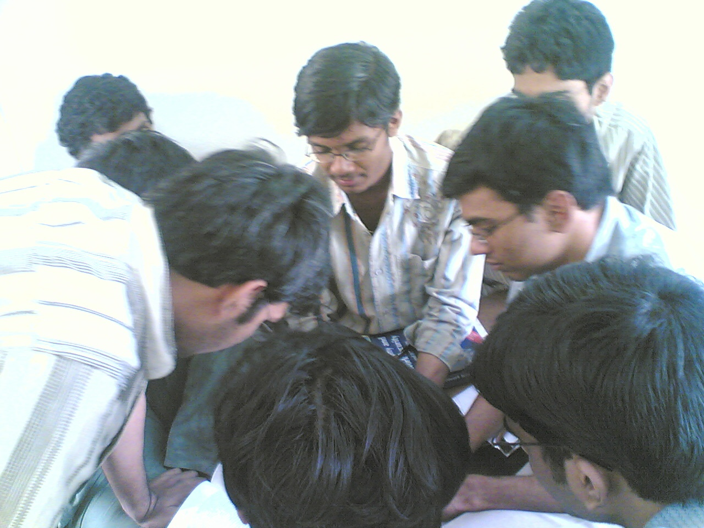
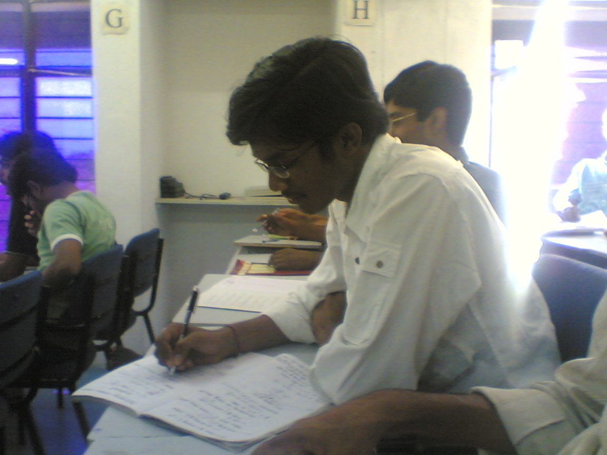
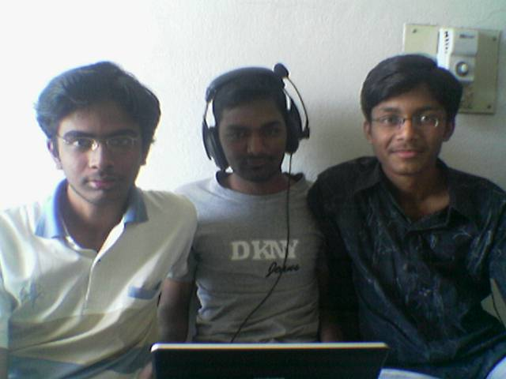

The Yearbook - Commemorating 2005-09!
Kiran Neelisetty's profile information
Name - Kiran NeelisettyBirthday - 19th August,1987
Email - kirann.8708@gmail.com
Address - 23-22-97b,SN puram,Vijayawada-11
Phone - 9966010011
Webpage - Link
Hobbies - Cricket,,Music,Browsing,No more Chatting/Flirting.....
WishList - no list...MS frm IIIT is enough
Memorabilia - Can't single out one moment from many memorable ones...
What would you want to be remembered as - Kiran Neelisetty
Future Plans - manchi job techkuni,manchi ammay ni pelli cheskuni,na sytle lo life ni njoi chestuuu......
Testimonials written to Kiran Neelisetty
Kiran Neelisetty's Album

.jpg){kind=link}
ive been doin dis 4 d last 4yrs

{kind=link}
appatloo antha sincere!!!

.jpg){kind=link}
In 1st year
Testimonials
For S.Rama Krishna RajuRaju gaaru...My senior at school...i knew him as a good Kabaddi player and a KASI student preparing for IIT right from his 8th standard...and by sheer harwork he came to iiit and again he continued the same hardwork here also which is really worth appreciating...
Last year he gave me a shock by raggin for the first time, which i never expected him to...
inspite of such deviations he continues his MS work in a professional manner...
Andariki e age lo love proposals vasthay..kaani raaju gaariki marriage proposals kuda vachesay...inka MS raavadame alasyam...raju gaaru oka inti vaadu aipothadu..so all d best for ur MS raa..
Hope v will njoi the last year of student life together..ame alasyam...raju gaaru oka inti vaadu aipothadu..so all d best for ur MS raa..
Hope v will njoi the last year of student life together...
For valiveti venkata srikanth
V srikanth aka PANDA...The KASIest of our wing...
Its really fun to be with him..Very studious....revises the entire sylabus atleast 5 times before any exam...Its not that he needs that many revisions..its only coz of his fear,he studies hard...
Shows a lot of interest in learning something new to him...
Goes to the deepest details of an aspect to have a clear understanding...
his dancing talent(revealed during his bday celebrations) is awesome..(not the traditional dances...his dance style is unique)...
He likes himself to be called a "psycho" and watches a lot of psycho movies to study the characteristics of a psycho...but he is so nice that he couldnt adopt to the role of a psycho...!
He speaks very fast that v couldnt make out what he speaks most of the time...i donno how the PEGA guys understood what he said..they might have fell for his knowledge...!
We did all the assignments together,prepared for exams together..
He was always there for me...Whenever i wanted to eat a pizza,biryani..wanted to go out...whatever...Such a liking v both have for food...and il defnitely miss u raa...
Hope u will b in touch always...
aLL D BEST....PEGA lo manchi pori ni set cheskuntavani aakankshistuuu..!
For Vikas Reddy
Vikasi....Linux kasi...evarki linux lo problem vachina veedi dhagarki elalsindhe...
always teases me with funny nick names(ofcourse i hit back at him too)...
akpk skit lo ne voice keka mama...the way u said the dialogue "peechu mitai konadanki pavala ledu kani paapochi paathika adigindhata..." is awesome ra....without ur backgroud voice,the skit would not have been that successful....
u have that comedy sense in u...thats y its fun talking to u...
For Vinay Reddy
vinay aka gilly...
Most of interactions are during the cricket matches...a good fileder...everyone makes fun of him...but he answers them with his skills...
veedi counters ki bali ayedi vimjam gaadu okkade papam...

I njoied alot in ur booze party...v had a great time on the day u got placed..
Just dont change your witty behaviour....b the same...ALL D BEST
For Vijay Bharath Reddy Yaram
Vijay bharath reddy...aka vibbu
Short and funky,very good programmer,good bowler,good batsman,good football player...
has a very good timing in comedy...vaadi dialogues lo voice lo antha punch untadhi...
One will never get bored with vibbu around...
Hoping that il get more time with u in the next year..not to get f***d by u...just to njoi seeing u F**** others....Looking forward to the next one year..Hoping u that dont tease me...
For Varun Jampani
Varun Jampani...first year lo na pakka seat...The perfect boy of our batch...The perfect planner...veedi CGPA chusi epudu chaduvkuntuu untadu ankuntaru...kaani veedu cheyani pani antuu ledu...a pani chesina vaadi trademark KASI tho ne chesthadu...
Mid sems exam mundhu elagaina movie chudalsindhe ani nannu LAKSHMI cinema ki teeskelli bali chesadu...(ma vaadu hardcore venki fan lee)...
Vaadi medha enni jokes vesina okate response...a serious look..

Exam lo okka min kuda waste cheyadu...aa qsn paper veedi kosame ichinatlu...complete time use cheskuntadu answer cheydanki...
rey ne gurinchi chalaa read chesaanu kani nuvu prathi saari iche item look matram ipatidhaka ardam kaledu ra...atleast next one yr(e one yr nuvu nanu barinchalsindhe...) lo aina aa look ki meaning ento ardam cheskogalige talent ni naku prasadisthavani aasistuuu ...avsaramaithe ne room pakkane room teskuntaa...
For Vamshi Velagapuri
Vam..the shortest boy of our batch...
pottivalantha gatti vaallantaaru.he is one such example...veedi height ki criket em adatadu ankunevadni..but gangulu laga off-side player ani expect cheyledu...
Studies lo veera KASI...2-3 days ki oka sari batch chese veedni chusi lazy ankuntam kaani..aa lazyness studies lo a matram ledu..!
comic scenes ki perfect ga suit avtadu...such a perfect timing he has in comedy...i still remember his lady get-up in one of the skits of our Freshers....that was awesome man...
Dual degree ki convert aina maro KASI..looking forward to have a nice time with u next year...(may b two years..na time bagokapothe..
)For V.V.Chaitanya Krishna
Hi..this is VV chaitanya..studying btech in iiit hyderabad...What are you doin??Can we b frns???...
Thats how he pings the unknown girls in orkut...
So those girls think that he is innocent and fall for this flirt...
ila entha manchi ammay la ni mosam chesado lekka ledu..!
but he is a very good person at heart,a very good cricketer...(only on legside..
)
chatting,orkutting lo antha bsy ga untuu kuda criket ki studies ki time ichaV ante...ur a good alrounder raa...
konchem flirting thagincha ra inka...aina nuv thaggav ani naku telsu le..ikkada batting aapesina work place lo defnite ga start chesthav....whatever u do...I wish u the very best in every aspect....take care
For UmaMahesh.Allenki
Mahesh...aa peru lo vibrations unay...Mahesh aa peru lo M undhi...
very cool person,intelligent cricketer,kasi in studies,kanpinchani comedy undhi veedilo(serious ga untu ne jokes vestadu)..
Anjaneya n I enjoied alot playing pranks on him in the mess...He hadnt takem them lightly but sometimes he had to coz thers no other alternative left for him...
chala sarlu vaadi item statements ni support cheskoleka kastapadevaadu..!
unfortunately i dint have much interaction with him..but im sure that it would have been more fun had i interacted with him more...
I always njoied his company...especially in the mess and on the ground...
All d bet raa..take care...
For Tavva Rajesh
Tavva Rajesh..My roomie for the first two years...
He is a very hard working person,the way he prepares for his exams...doesnt leave the smallest possible detail of anything....antha orpu undhi veediki...
Very famous for his dance skills...
Vaadi rajasekhar voice mimicry ki andharuu fans aipoyaru...its only because of hi concentration and dedication..he was able to mimic or dance very well...
He conducted many successful tutorials for us...
whats great is that he has time for all of ous besides his busy schedule..
He goes out very rarely...last 2 yrs lo emana changes vachi undochu...i donno coz i dint interact him that much for the last 2 yrs...
Spends most of his time in the lab right from the first year itself...thats a very good quality...hope one day il become like u...if not possible..atleast half as hard working as u are...!
ALL d best for ur MS raa
take care
For Sunil Soni
Sunil Soni...As he is from nbh,I had a very little interaction with him...
He is very confident person...After the DLD xam he told me that he would get 40/50 or so...I was amazed to see his confidence...
he believes in himself very much and that helps him achieve what he wants...
Paapam konchem weight add chedhamani thega try chesi,visugu putti, lite teskunaadu..!
I like ur attitude very much..b like this...
ALL d best...take care
For Subroto Sen
Subbuu...He was my wingmate for the first two years...
He is very cool,studious(prepares from 2 weeks before the exams),very helping,...
i had only a few interactions with him....
v studies together for the physics-1 xam and I stood second in the class...All the credit goes to him only...Its because of the perfect preparation with him..!
Im very unlucky that he is ece and im cse...thats y i couldnt be in touch with him over a long period of time....
Wishin u all d very best...just dont change anything in you,u r perfect and b like this..!
For Srujan Kumar
Love God,lover boy,play boy....
andharu nannu dobutaru kani epudu ph matladtha ani...veedu nakanna ekuva ga matladtadu...epudu ph lo bsy ga untadu...
ala antha mandhi ammay la tho sollu kottadanki aa God veediki antha orpu ichaadu..!
aishwarya rai ki pichca fan...adhi aunty aipoina veedi abhimanam poledu..
oka rakanga veedu social service chestunadu...veedante istam aina valatho gantalu gantalu matladi valani happy feel aye la chestunadu...ee type social service cheydanki chala orpu undali and he has lots of it...
ne orpu lo konchem naku prasaadincha raa..
wishin u all d best...take care
For Srirang Ranjalkar
He is popularly known as DJ Ranga...the cutest boy of our batch...One can always find a smile on his face...
cultural nites,freshers...apudu veedu chese rachcha antha intha kaadhu...
cricket lo kuda anthe energy chupistadu...first time veedni ground lo chusinapudu lite le veedem aadatadu ankunaa...but he showed me how good he is as a fielder,bowler and batsman...rojuu practise lekapoina kuda kumesthaadu..!
English serials baaga chuustadu...mess lo epudu adhe discuss chesthadu...
Il remember u as a diehard music lover and a great all round cricketer...
ALL d best for ur future raaa...take care
For Srinivasa Rao Sunkara
The ultimate kasi of iiith...first two years na roommate avalsina vaadu...but na daily schedule vadni disturb chestundhi ani room maaripoyadu...ipudu telsindhi elanti mutyanni nenu kolpoyanoo...
veedu anni vishayallooo perfect,punctual,regular,commiited(aaa committed kaadhule...committed to the task on hand..
),sincere....this list goes on n on...
Ne lanti kasi galla gurinchi nenu puurtiga chepalenu ra...
ALL d best for ur future..
For Srikanth vimjam
Vimzam....veedi personality ki behaviour ki asalu relation undadhu...manishi solid ga unaa..manasu sunnithamainadhi...evarni emi anadu...evarana vaadi medha jokes vesina smile ichi oorukuntadu...such a good person he is...
Pulsar medha kuda 20-30 speed tho vellay antha orpu undhi veediki...
But Cricket lo matram full attacking....keka aadatadu...2 yrs back vaadi innings chusaka vaadi frnd(fan) ayaanu..
Very helpful person...
andaru veedi dhagarninchi expect cheyani angle...Gal frns...he used to have many gfrns 2 yrs back but now he is concentrating on the job on his hand..Prof.Vimzam...
Repu students veedni ekkirinchakunda undaali ani Personality development programme start chesadu..!
All d best raaa...hope the students of LPU wont play with uuu....
For shashank lagishetty
lagishetty...one more school boy of our batch..wakes up at 6,takes breakfast with milk and an egg,punctual and regular to all classes,takes notes for every item subject,uptodate in every course,....hmmmmm...oka kasi time table eskuni aa time table ni antha kanaa ekuva kasi tho implement chestadu...I would like to steal his timetable next year so that i can complete my MS..
studies tho patu ma vaadi extras kuda chala unnay..
cricket lo fielding keka...batting lo intelligent...
a pani chesina enrgy efficient ga chesthadu...brain use chesi thakuva strain avthadu..!
intiki elinapudu kuda timetable matram miss avvadu..
u r perfect raa...ilane next yr kuda continue chesi tvaraga MS techkovaalani,ne crush neku baaga dhagara avaalani aakankshistuuu...kiran n
For Shashank Agrawal
shashank...i knew him in the first year when he used to come to my room only to watch stuff on my lappy...Many of our batch dont believe this considering the "innocent" image he has..but he is not..
Theres no need to talk about his intelligence and hardwork..as every member of batch know about them..
I had a very nice time playing table tennis with him....both of us trying to outsmart each other...but after some days he became very studious and stopped wasting time for such small things also..
Wishin u a bright future...take care
For Satyanarayana Koneru
Satya Koneru...
I donno much about him.He is a very calm person.The only other thing i know about him is his cricket.
He has the best reflexes among the ones i have ever seen live...fast bowler or spinner...he will be there right next to the stumps stopping all the crap deliveries we bowl...
And his batting...everyone saw wat he is up to in his last innings...
ALL d best raa...
For Satish Varagani
Satish Varagani...I knew him from the 3rd year when we were in the same floor...
talent undhi kabate one day batting tho netukochadu btech motham...
aa talent ni maa vaadu veray rakam ga kuda use chesaevaadu...e.vadi cell lo Airtel to Airtel balance unaa veeday use chesthadu...e patiki reason ardham aye untadi...kakapothe twist entante ma vadu gf ni vetukunapudalla same network una valani vetukuntadu (veedi airtel unapudu airtel ammay lani,vodafone unapudu vodafone ammay lani)...so that it will be easy to talk on phone for hours together...adhi ma vaadi variety talent...
e kasi talent tho oka paper kuda publish chesadu...
inka job techeskunte ne talent ni complete ga use cheskunatle ra..
ALL d best...
For sana
Sheik Sana Bhai...The fastest and the most dangerous bowler of UG2k5..
(konchem ekuva aindhi lee)
he tries to bring an impression that his height doesnt affect his fielding..but fails to do so
He appeals for each n every thing and that way he is a livewire in the ground...vadu lekunda cricket adadam chala bore...
coming to other matters,
he is fun to be with,I still remember his tyson look in a tight Tee shirt...
And im very lucky to have one more year with you...hope v will have a nice time...
For Samuel John
pottolantha gattollu antaru...veedu nijamgane gatti pidugu...
I know about him when he comes to play cricket...
fast bowling veydanki height undali ane theorem ni disprove cheyadanki veedoka example...inka batting vishayam ki vasthe...ball bat ki tagilthe six a..kakapothe rare ga tagilidhi..
evardi aina bday ante chaallu..vachi G**** pagalakodatadu...anduke papam last bday vadiki pack aindhi..
thats all i could make about him from the very few encounters with him
I wish u a very bright future raa..tc
For Purushotham
Purushotham...his name justified by him...he doesnt have ne bad habits...a traditional guy(generally v use the word "traditional" for gals...but abbay la lo kuda alanti vallu inka unaaru anadanki veeday living example)...he is very cool and doesnt bother about others playing pranks on him...he just takes every joke on him lightly...ila silent ga resiste cheydam lo veediki veede saati...
epudu edoti chaduvtuune untadu...thats the quest for his knowledge(not related to academics)...
first year lo na room pakkane undevadu...vaadi roommate entha savadobhina veedu valani em anevadu kadhu...thats his gr8ness...
he became my friend in the first sem itself..
I thought he was a good boy just like u r thinking reading this testimonial..but he gave me a shock one day...he came to my room and asked me to give him my laptop so that he can njoi P stuff....
OMG...he used to come everyday for that...(sry ra...nijam cheppaka thapatledu...
)
But still he has a good control over himself and i like that very much...
Hope u have a bright future ahead and beware of ur would be partner raa...ne lanti vallake kanchu lu vastharu..jagratha...
For Prudhvi Vatala
prudvi vatala...one of the best all-rounders of iiit...excluding studies(manaki ilanti chaduvlu suit avav mama..
)..he takes life as it is and never get worried about nething...His condidence is enough for him to take him to unreachable heights...his very very careless attitude makes him more attractive...he knows how to deal with everyone around him especially girls => he is a very big flirt...no doubt about that...
Its very rare to come across such a multi-talented person and im very lucky to be his friend...being his friend is enough..one can learn many things..!
ALL d best raa...nuvu professor ante navvu vastundhi kanii..but im sure u will rock in LPU as well..
For Nagarjuna Pavan Kumar G
Intelligent,Intellectual,....veedni describe cheydanki e place saripodhu,
anyayam jarigithe chudaledu,very sincere,a vishayam aina perfect ga analyse chese talent undhi veediki...he will be there to encourage you when you are not at your best...he is good friend to have..Be the same raaa..I wish u a bright future ahead...
For goutham
Counter king of our batch antaru veedini...fortunately or unfortunately ipati varaku nenu veedi counter ki bali avaledu...Workspace lo unapudu parichayam ayadu...veray hostel n ece avadam valla touch lo lekunda poyam...
from my experience in the first sem,he is a real KASI...english-1 report kosam Harry porter part-1 motham chadivadu...antha kasi...
school boy laga rojuu podhine lestadu,breakfast chesi,classes anitiki regular ga punctual ga eltaadu.He doesnt need one day batting as he studies everyday...Such a sincere school boy he is..
all d best ra...
For Maruthi Manohar
MMR...thats how v call him...xams apudu anjaneya kosam vacihnapude kanpistadu...so ekuva telskolekapoyanu
exams ki school boy laga perfect ga prepare avthadu,may b he is perfect like that in every other aspect
One thing in you I cant stop myself from appreciating is ur self motivation...(being able to be so serious in studies in 4th yr also despite having a bad year before...)
ALL d best for ur future..
For Manish Sharma
Manish Kumar Sharma...My first encounter with manish was when we were ragged by a senior in our wing...I was shocked seeing him answer to the senior in a bold way...From then onwards..he became a good friend of mine.He always wanted to learn telugu and succeeded to a large extent...I really appreciate ur efforts to learn telugu Manish...
I like the innocent way he questions the professor (especially in Bru sirs class)..
He is the one who can express his views in front of anyone without much effort and any fear...
You have it in you to become a good research student...I wish u all d best for ur MS and looking forward to have a nice time with u for the next one year..
For Kubera Samrat
aisa...ila ante veediki nachadhu kaani adhi perfect name veediki...veedu vesina jokes ardam cheskodanki antha sepu patidhi mari..
he is a very good person..ready to help neone(for an instance,his bike is used by all our batchmates)
very good cricketer...I would like to bowl like him...
veediki chala love stories unnayi...oka sari ON lo unapudu naku chepesadu anii...(ikada avemi chepanu le..edavaku)
ne wing lo lekapodam valla chala item jokes miss ayanu ani feel avtuntaanu epudu...
i really njoied playing cricket with u...il defnitely miss u whenver i play in our felicity ground...
all d best Prof. Sam
For Kranthi Reddy. B
One and only item bomb of our batch...
Very good cricketer and a good captain ( i liked his captaincy when v play among ourselves)
Take it easy nature
I want to see u again with long hair raaa...Dhoni tarvata antha baga set aindhi neeke...
Hope i'll njoi the next one year with you...
For Kishore Yadav
He is one of the coolest of our batch...doesnt get tensed by anyting...he was the one who showed me how to use gaim to chat with yahoo users in the first year(in workspace systems)...he is my inpiration in one thing(cant mention here...but i hope u understood it)...
rey ipatki aina konchem bayapadadam nerchko raa...
hoping the best for uuu...
For Kishore Pudi
wulfor...DC open chesina ventane andharuu check cheskunedi veedi filelist a...thanks alot raa for your efforts in downloading all the stuff for us...and im very very happy that finally "you are yourself again"...
For Kiran matam
I came to know him only from last year...because of playing crciket together...Eventhough he has talent in many fields,he never boasts of them or overshows.His modesty is very appreciable.As his name "laughing kiran" suggests,he never becomes serious or angry on anyone...such a nice person he is...i have never seen him arguing r fighting with ne1...he is very opposite to me but still im not able to stop myself from appreciating him...Be like this forever...All d best
For kharkwalg
The only thing i know about gaurav is his "Quest for knowledge"..
..I donno how he gets those many douts when the professor is teaching...Any good professor would love to teach a student like him(sincere,hardworking...)as shashank said the only word that comed to my mind when i see u is "kasi"....For Himank Sharma
I first met him in the ug1 class room...He used to sit behind me in the first few days..He made the guys around him his friends on the first day itself..I thought that he was a good boy..but he showed what he is the next day itself...he learnt all the bad words in telugu to my surprise.I myself had never used those words...He is the most mischievious of our batch...disturbs everyone around him...behaves just like a manki..hi'manki' is the best name that suits him...
Besides all these bad qualities,he has many good tings abt him...very serious about his studies (but doesnt appear so)...
Im very happy that u got placed in a good mnc...
all d best for ur future...
For Hareen Gopisetty
There are 100s of interesting things about hareen.Paiki chudatanki ammaykuda laaga,emi teliini vadu laa untadu.most uninteresting person la anpistadu.Even i felt the same when i first saw him.But slowly i had to change my opinion.
Most visited sites(hobbies) wikipedia.org.encyclopedia,xxx jokes in santa banta,anime p*** (ofcourse normal ones also
) and seeing others paly DOTA,AOE(he never plays those games coz they might waste his time.Instead he quenches his thirst by observing the games of others..!)Such a strange person he is...he watches a lot of movies...The most funniest thing about him while watching movies..(if ne one asks a dout about a scene in the movie,he would pass the movie first and explains the complete details of the scene...)He is very sensitive,nervous,fearful...he doesnt like to miss the smallest detail of nething (b it dota games,preparation for xams,watching a movie)...like this,he wants perfection in everything....
papam veedu ela bratukutado ani vaalla dad bayapadutuu untaru...but he is exactly the opposite of what one thinks about him...ipatiki intlo alanti impression maintain chestunav ante nuvu chala gr8 raa..
And it was really fun playing pranks on u raa..thanks for being with us all these years...
ALL d best raa...
For Gopala Krishna Koduri
GOKI...he does watever his heart says to do...deeniki perfect example cognitive sceinces lo MS pursue cheydam...veediki teliyani vishayam antuu undadhu...he has knowledge about almost everything...veedi tastes kuda veediki thagatte untay...classical music ante chala istam...his tastes or preferences are not at all influenced by modernization...
also he is very sincere and committed to his work...Thats the best quality of him and I hope it would take him to greater hights...
For G. Rohit Bharadwaj
The only thing i know about rohit is his "cricket".
Veedi kasi cricket adetapude kanpistadi...migatha time lo chala cool ga untadu...he is one of the best of iiit...practise matches kuda kasi ga adatadu..thats the love he has for cricket...He is a good example to show that one should be serios and sincere to be successfull in what you do...
Looking forward to have a ncie time with you in the fifth year and All d very best for ur MS...
For Charan Thota
e edhava gurinchi college motham telsu...inka nenu kothaga em chepalenu...vadni describe cheyadanki na dhagara unna adjectives saripovu kuudaaa...
Be like this forever raa...
All d best for ur future....
For Chandrashekar V
The only fair n lovely boy of our batch..
fair n lovely raasukokunda baitaki raadu veedu...(sorry ra..cheppaka thapatledu)...
When I met him in the first year,we found that v both are alike...taking life easily,using any bad words with ease,one day batting before xams..sry..one night batting would be more correct...
Evaru emanna nuvu ilane undu mama...bindaaz ga...thats how v can live happily
All d best ra for ur future with a pretty ...!
For Amarnath
Mental Chagu,mountain king,cloudstar...these names are nearly enough to know anout him...chudatanki mabbu laa untadi kani,he is intelligent.andharuu hi ani greet cheskuntam.kani e edhava andarni kotti greet chesthadu.paapam veedi motu sarasam aa sidhu gadu ela tartukuntadoo..!
Rey nuvu first year ninchi naku telsi unte inka aadukune vadni ra..but em chestham na bad luck...
For Abhilash Inumella
AbhlashI....He is damn cool...I spent a day with him in chennai(during our TechVista trip..).It was becaue of him that I was able to enjoi that trip...I like his attitude the most.He always sees the positive side of the things..He can make anyone his friend in no time(especially girls..
)=> a big flirt...
And im too small to talk about his achievements in academics n sports...He is the best all rounder i have ever seen(atleast in IIIT)...
u rock dude...looking forward to have a nice time with u in 5th year..
For anjaneya srinivas
K Anjaneya Venkata Srinivas....
This name is truly justified by this person...In IIIT,he is our GOD...professor,tutor,best friend(a proffesor chepina dhaani kannaa veedu chepindhe naku baga ardham aidhi) n liked
by all my wingmates,ma batch lo ekaika IIT ranker(ma kosame aa God veedini IIIT ki pampaadu...)Without him v dont go2 clases,v dont do assignments,v dont prepare 4 xams,v dont go anywhere....
He always has time for us besides his busy schedule(rojuu 3 movies n 2 AOE games...so busy kadha!!!)...hmmm...He is very patient...DC lo a item movie vachina vadhaladu..opika ga movie
chudatame kakunda aa movie ni analyse chesthadu...Also he is a games freak...veeedu aadani computer game ledu...!But still he is not addcited to anything.That self-control is what I like in him
the most(which is not present in me to some xtent)...He thinks far better than the ones of his age..such a merchured person he is...And his suggestions are invaluable.I always go to him when im in
confusion...One thing I would like to steal from him (if given such a chance)is his intelligence..At one stage,his logics and counters became unbearable and so we started making fun of his counters
(calling him counter kind would be an understatement).we give him new nick names to stop his counters.He is such a nice person that he wont take anything seriously.He posseses a long list of good
qualities like this.He is the only school boy of our wing.He wakes up early,take bath and breakfast everyday,goes to bed early,attends every class,prepares notes for every subject....he is nearly perfect
He was there with me all these years,helping me out all the time....Everyone would like to have him as a friend and Im very lucky....
All d best for ur future...Keep Rocking..!
For Raghavendar Reddy
Raghavendar a.k.a ERREDDY ( ilanti nick name vastundhi ani iiit ki vachedhaka vadiki kuda telidu papam)...Very studious,intelligent,practical...veedilo kanpinchani kasi undhi...aa kasi studies lo ne kadhu...ani vishayaloo untadhi...spends most of his time in browsing (most of them are tech sites).One thing he learnt near perfectly after coming to iiit is AOE.I get bored seeing him play that game.We study together,assignments,shopping,playing games,torturing bhanukiran...ilaa ani panlu kalise chesthamu except that damn boring AOE..V both are alike in most of the aspects except aieee rank....e kasi dash nakana manchi rank kotesadu...He will always b there to aruge with me on any item topic...Il defnitely miss him from now...but il make sure that he is in touch with me
veedi gurinchi inka chepalante ..
Studying,browsing,AOE...ila 4 yrs complete chesadu ankuntaru andharu.No1 thinks that he has girl friends.nenu chatting chesthaa ani abadhaalu cheptaadu kani vaadu oka ammay kosam enni night outs chesado lekka kuda ledu...vedu india lo..aa ammay US lo..timings problem...but he didnt care any such problems...He used to talk to her all the night...papam aa ammay india ki vachaka vadilesadu..
..HE always maintains high standards in life..like maintaining a gf in US,he also wanted to be placed in MS/Google.recession valla alanti job raledu.so he edited hi goal.Now his only goal is to marry a girl who is placed in google/MS...That one asset is enough for his would be partner...inka migatha aspects lo entha lite aina parledu...He will spend his life doing all the household activities,watching cricket if he finds such a partner...in a way he is the perfect match for modern girls...
So try ur luck if u r in google/MS...else sorry better luck next time...
For Varun Jampani
rey oka hobby marchipoyav raaa...
"kanti chhuupu tho janaalani bayapettadam!!!!"
For Gopala Krishna Koduri
phd kanna ekuva emanna unte adhe pette vaadivi kadhaa?